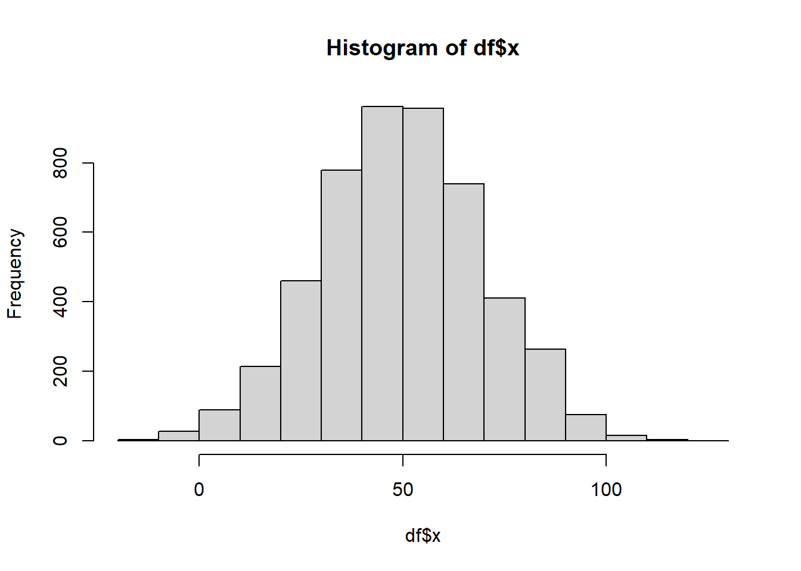
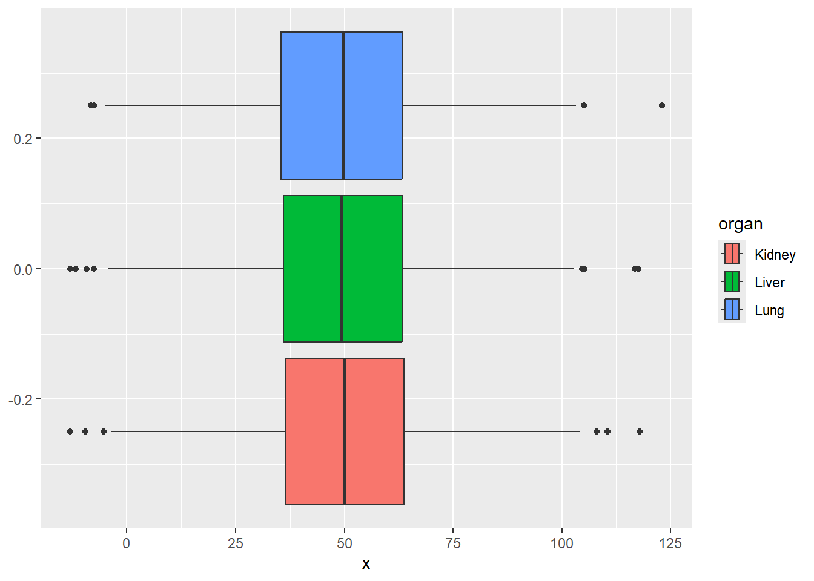
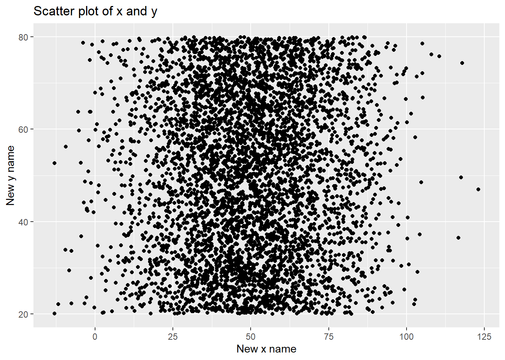

library(tidyverse)4 Initiation Graphiques
4.1 Simulation d’un jeu de données
n <- 5000
id <- 1:n
x <- rnorm(n, 50, 20)
status <- rbinom(n, size = 1, prob = 0.3)
y <- runif(n, min = 20, max = 80)
cat <- sample(c("Lung", "Liver", "Kidney"), n, replace = T)
z <- runif(n, 0, 1)
df <- data.frame("id" = id,
"x" = x,
"y" = y,
"z" = z,
"status" = status,
"organ" = cat)
df <- mutate(df, status = as.factor(status))4.2 Graphiques avec R base
En général, on réalise les graphiques avec le package ggplot2. Cependant, les fonctions de R base peuvent être utiles quand on veut juste un apperçu rapide des données.
Nuage de points
plot(df$x, df$y)Courbe
plot(sort(df$x), df$y, type = "l")Histogramme
hist(df$x)
Boxplot
boxplot(df$x)4.3 Graphiques avec ggplot2
Pour réaliser un graphique avec ggplot2, on commence par utilisé la fonction ggplot() dans laquelle on spécifie les données à utiliser. Ensuite, on rajoute la fonction pour choisir le type de graphique et on peut mettre d’autres fonctions pour le personnalisé. On utilise + pour enchaîner les fonctions graphiques.
On peut spécifier les données des axes soit dans la fonction ggplot(), soit dans la fonction du graphique. Dans les deux cas, cela se fait avec la fonction aes()
Les fonctions définissant les type de graphiques commencent par geom_
4.3.1 Nuage de points avec geom_point()
ggplot(df, aes(x=x, y=y))+
geom_point()Ici nous definissons l’aes dans geom_point()
ggplot(df)+
geom_point(aes(x=x, y=y))
Ajouter des couleurs
On peut ajouter des couleurs soit en fixant une couleurs si on veut juste modifier le noir qui est la couleur par défaut. Soit en colorant en fonction d’une variable.
Pour choisir la couleur, on utilise l’es arguments’argument col =.
Si on veut choisir une couleur fixe, on utilise définit col dans la fonction du type de graphique, à l’extérieur de l’aes().
Par contre, si on veut définir les couleurs en fonction d’une variable, alors on le défini à l’intérieur de l’aes()
ggplot(df, aes(x=x, y=y))+
geom_point(col = "lightblue")
Couleur en fonction de la variable organ
ggplot(df, aes(x=x, y=y, col = organ))+
geom_point()On peut également colorer en fonction d’une variable continue et avoir un dégradé
ggplot(df, aes(x, y, col = z))+
geom_point()+
scale_color_continuous()Forme des points
On peut définir la forme des points avec l’argument shape =. De même que pour les couleurs, si on le définit à l’extérieur de l’aes, la même forme s’appliquera à tous les points.
Si on le définit à l’intérieur de l’aes, la forme dépendra de la variable choisie

ggplot(df, aes(x=x, y=y))+
geom_point(shape = 3)ggplot(df, aes(x=x, y=y, shape = organ))+
geom_point()Modifier la taille des points
On peut modifier la taille des points avec l’argument size = . De même que pour les couleurs, on la fixe à l’extérieur de l’aes ou on la laisse dépendre d’une variable à l’intérieur de l’aes
ggplot(df, aes(x=x, y=y))+
geom_point(size = 3)ggplot(df, aes(x=x, y=y, size = status))+
geom_point()Warning: Using size for a discrete variable is not advised.4.3.2 Histogramme avec geom_histogram()
ggplot(df, aes(x))+
geom_histogram()`stat_bin()` using `bins = 30`. Pick better value with `binwidth`.Ajouter des couleurs
On peut ajouter des couleurs soit en fixant une couleurs si on veut juste modifier le noir qui est la couleur par défaut. Soit en colorant en fonction d’une variable.
Pour choisir la couleur, on utilise les arguments col = ou fill = . Col est utilisé pour les points et les lignes et les bords des barplots. Pour colorer l’intérieur des barplots on utilise fil.
Si on veut choisir une couleur fixe, on utilise les arguments col ou fill dans la fonction du type de graphique, à l’extérieur de l’aes().
Par contre, si on veut définir les couleurs en fonction d’une variable, alors on le défini à l’intérieur de l’aes()
ggplot(df, aes(x))+
geom_histogram(col = "#7c1444")`stat_bin()` using `bins = 30`. Pick better value with `binwidth`.ggplot(df, aes(x))+
geom_histogram(fill = "#7c1444")`stat_bin()` using `bins = 30`. Pick better value with `binwidth`.On peut mettre un effet de transparence avec l’argument alpha =
ggplot(df, aes(x))+
geom_histogram(fill = "#7c1444", alpha = 0.6)`stat_bin()` using `bins = 30`. Pick better value with `binwidth`.Couleurs en fonction d’une variable
ggplot(df, aes(x, fill = organ))+
geom_histogram()`stat_bin()` using `bins = 30`. Pick better value with `binwidth`.4.3.3 Boxplot avec geom_boxplot()
ggplot(df, aes(x))+
geom_boxplot()On peut l’avoir dans l’autre sens en utilisant coord_flip()
ggplot(df, aes(x))+
geom_boxplot()+
coord_flip()On peut faire plusieurs boxplot selon les catégories d’une variables catégorielle sur le même graphique
ggplot(df, aes(organ, x))+
geom_boxplot()Ajouter des couleurs
Pour les boxplots, les couleurs fonctionnent de la même façon que pour les histogrammes : col pour définir les couleurs des bords, des quartiles, des outliers, etc, et fill pour l’intérieur du boxplot
ggplot(df, aes(organ, x))+
geom_boxplot(col = "firebrick")ggplot(df, aes(organ, x))+
geom_boxplot(fill = "firebrick")ggplot(df, aes(organ, x, col = organ))+
geom_boxplot()ggplot(df, aes(organ, x, fill = organ))+
geom_boxplot()Remarque: on peut le faire en définissant uniquement une variable et la variable de couleur, mais dans ce cas les modalités n’apparaissent pas sur l’axe
ggplot(df, aes(x, fill = organ))+
geom_boxplot()
Remarque: on ne peut pas colorer que ce soit avec col ou fill en fonction d’une troisième variable
Autres personnalisations
Augmenter l’épaisseurs du boxplot avec size
ggplot(df, aes(organ, x))+
geom_boxplot(size = 1)4.3.4 Barplot avec geom_bar()
ggplot(df, aes(organ))+
geom_bar()Ainsi on a le nombre d’observations qui prennent chaque modalité.
Une autre façon de faire :
df_bar <- df %>%
group_by(organ) %>%
summarise(n=n())
ggplot(df_bar, aes(organ, n))+
geom_bar(stat = "identity")
Pour l’orienter dans l’autre sens on ajoute la fonction coord_flip()
ggplot(df_bar, aes(organ, n))+
geom_bar(stat = "identity")+
coord_flip()Ajouter des couleurs
ggplot(df, aes(organ))+
geom_bar(col = "red")ggplot(df, aes(organ))+
geom_bar(fill = "orange")Superposer des modalités
ggplot(df, aes(organ, fill=status))+
geom_bar()Ou
df_bar <- df %>%
group_by(organ, status) %>%
summarise(n=n())`summarise()` has grouped output by 'organ'. You can override using the
`.groups` argument.ggplot(df_bar, aes(organ, n, fill = status))+
geom_bar(stat = "identity")4.3.5 Courbes avec geom_line()
ggplot(df, aes(x, y))+
geom_line()Couleurs de la courbe
ggplot(df, aes(x, y))+
geom_line(col = "darkgreen")Si on défini la couleur en fonction d’une variable catégorielle, alors on aura autant de courbes que de modalités
ggplot(df, aes(x, y, col = organ))+
geom_line()Format de la courbe
On peut changer l’aspect de la courbe avec l’argument linetype
ggplot(df, aes(x, y))+
geom_line(linetype = "dashed")
Pour changer l’épaisseur du trait, on utilise l’argume linewidth
ggplot(df, aes(x, y))+
geom_line(linewidth = 0.8)4.3.6 Personnalisation des couleurs
Lorsque l’on définit des couleurs en fonction d’une variable, les couleurs sont mises par défaut.
On peut modifier cela en définissant nos propres couleurs avec la fonction scale_color_manual() ou scale_fill_manual()
ggplot(df, aes(organ, fill=status))+
geom_bar()+
scale_fill_manual(values = c("firebrick", "orange"))On peut indiquer clairement quelle couleur correspond à quelle modalité
ggplot(df, aes(organ, fill=status))+
geom_bar()+
scale_fill_manual(values = c("1" = "firebrick",
"0" = "orange"))On peut aussi dans cette fonction renommer les modalités pour changer leur nom dans la légende
ggplot(df, aes(organ, fill=status))+
geom_bar()+
scale_fill_manual(values = c("1" = "firebrick",
"0" = "orange"),
labels = c("0" = "Alive",
"1" = "Dead")) Pour un dégradé de couleurs associé à une variable continue, on utilise la fonction scale_colour_gradient()
ggplot(df, aes(x, y, col = z))+
geom_point()+
scale_colour_gradient(low = "black", high = "white")Ou si on veut spécifier plusieurs couleurs la fonction scale_colour_gradientn()
ggplot(df, aes(x, y, col = z))+
geom_point()+
scale_colour_gradientn(colours = c("darkred", "orange", "yellow", "white"))4.3.7 Ajouter des lignes sur le graphique
Il est parfois utile de rajouter une ligne horizontale ou verticale sur un graphique afin de mettre en avant une graduation. Cela se fait avec la fonction geom_hline pour une ligne horizontale, geom_vline() pour une ligne verticale ou geom_abline() pour définir une droite spécifique comme par exemple une droite de régression
Ligne horizontale
ggplot(df, aes(x,y))+
geom_point()+
geom_hline(yintercept = 60, col="darkred")Ligne verticale
ggplot(df, aes(x,y))+
geom_point()+
geom_vline(xintercept = 0, col="darkred")Droite
ggplot(df, aes(x,y))+
geom_point()+
geom_abline(slope=1, intercept = 20, col = "darkred", linetype = "dashed", linewidth = 1)Droite de régression
Pour ajouter une droite de régression, on peut utiliser les fonctions geom_smooth() ou stat_smooth() avec l’argument method = “lm” pour une régression linéaire par exemple.
L’argument se permet de montrer ou non l’intervalle de confiance
ggplot(df, aes(x,y))+
geom_point()+
geom_smooth(method="lm", se=T)`geom_smooth()` using formula = 'y ~ x'ggplot(df, aes(x,y))+
geom_point()+
stat_smooth(method="lm", se=T)`geom_smooth()` using formula = 'y ~ x'
4.3.8 Noms des axes et titres
Pour modifier le nom des axes on utilse les fonctions xlab(), ylab() ou labs()
ggplot(df, aes(x=x, y=y))+
geom_point()+
xlab("New x name")+
ylab("New y name")ou
ggplot(df, aes(x=x, y=y))+
geom_point()+
labs(x ="New x name",
y="New y name")
Pour ajouter un titre, on utilise soit la fonction ggtitle, soit encore labs()
ggplot(df, aes(x=x, y=y))+
geom_point()+
ggtitle("Scatter plot of x and y")ggplot(df, aes(x=x, y=y))+
geom_point()+
labs(x ="New x name",
y="New y name",
title = "Scatter plot of x and y")
Dans la fonction labs(), on peut aussi définir un sous-titre, une note de bas de page
ggplot(df, aes(x=x, y=y))+
geom_point()+
labs(x ="New x name",
y="New y name",
title = "My graph",
subtitle = "Scatter plot of x and y",
caption = "Source: R simulations")4.4 Facets
Plutôt que de colorer par modalité, on peut parfois préférer faire un graphique par modalité d’une variable catégorielle. Pour cela, on utilise les fonctions facet_wrap() ou facet_grid()
ggplot(df, aes(x,y))+
geom_point(col = "lightblue")+
facet_wrap(~organ)
ggplot(df, aes(x,y))+
geom_point(col = "lightblue")+
facet_grid(~organ)on peut aussi utiliser ces fonctions sur deux variables catégorielles. Cependant, dans ce ca les deux fonction ne vont pas retourner le même graphique
facet_wrap() fait un graphique par combinaison des modalités des deux variables
ggplot(df, aes(x,y))+
geom_point(col = "lightblue")+
facet_wrap(status~organ)facet_grid() fait aussi un graphique par combinaison des modalités des deux variables, mais de façon plus organisée. En mettant les noms de la première variables à l’horizontale et ceux de la deuxième à la verticale
ggplot(df, aes(x,y))+
geom_point(col = "lightblue")+
facet_grid(status~organ)4.5 Télécharger un graphique
Pour télécharger le dernier graphique que l’on a exécuté on peut utiliser la fonction ggsave()
ggsave("RESULTS/plotS4.1.png")Saving 7 x 5 in imagePour télécharger un autre graphique, il faut le nommer puis y faire référence avec l’argument plot = dans ggsave()
p <- ggplot(df, aes(x, y, col = z))+
geom_point()+
scale_colour_gradientn(colours = c("darkred", "orange", "yellow", "white"))
ggsave("RESULTS/plotS4.2.png", plot = p)Saving 7 x 5 in imageOn peut spécifier la taille de l’image avec les arguments width et height
ggsave("RESULTS/plotS4.3.png", plot = p, width = 4000, height = 2800, units = "px")On peut également le télécharger au format pdf, en changeant l’extansion du nom de fichier
ggsave("RESULTS/plotS4.3.pdf", plot = p, width = 4000, height = 2800, units = "px")4.6 Ressources
Les sites Datanovia et STHDA sont très bien faits et très complets pour tout ce qui concernent les graphiques en R
http://www.sthda.com/
https://www.datanovia.com/